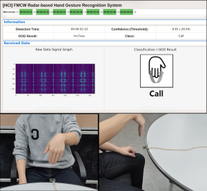
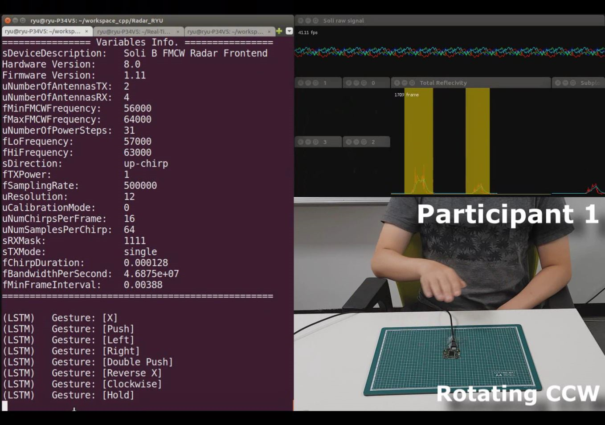
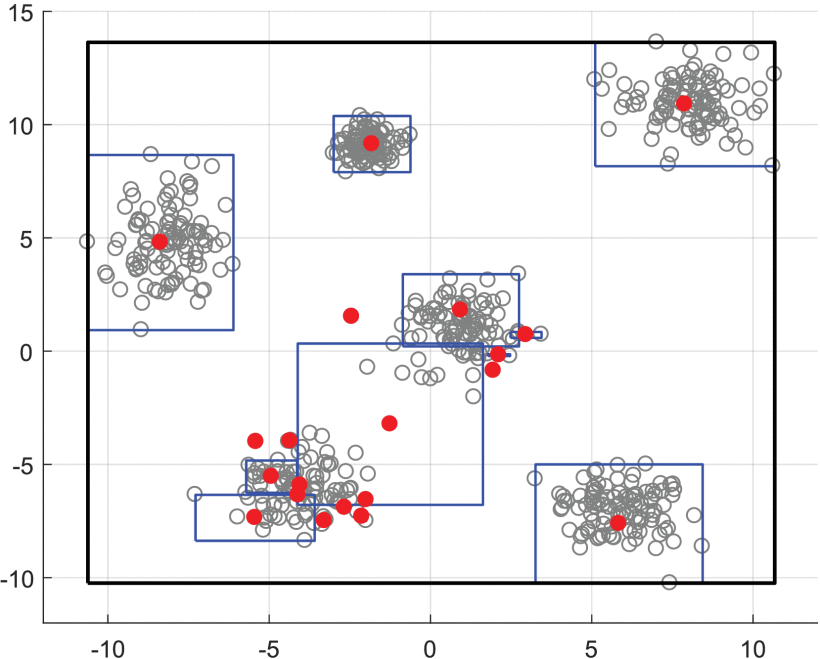
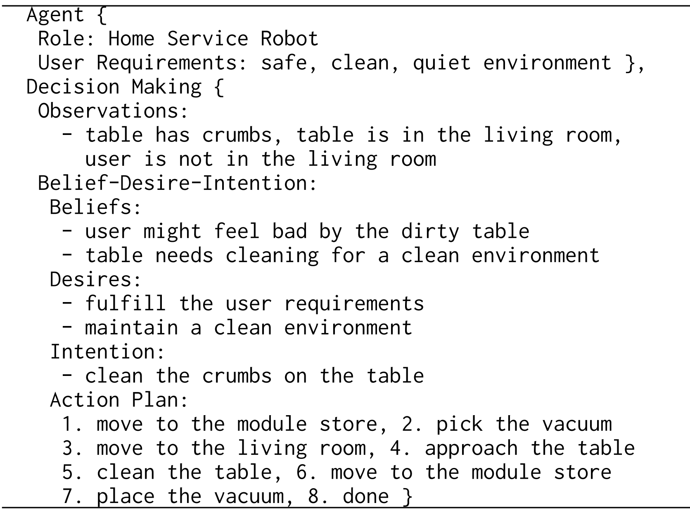
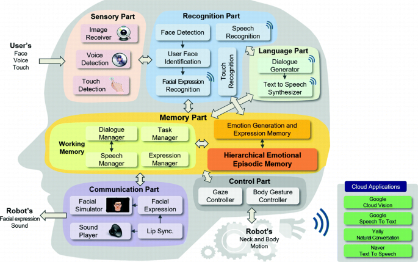
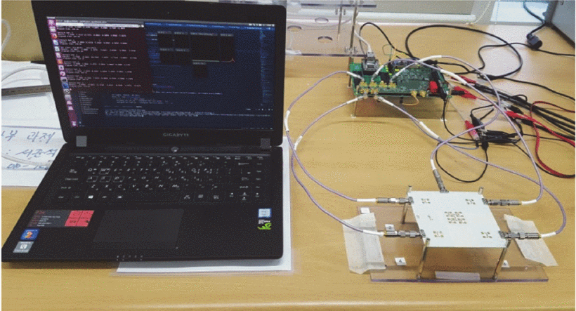

I am a Senior Researcher at ETRI (Electronics and Telecommunications Research Institute) and a concurrent Assistant Professor at UST (University of Science and Technology), South Korea. My research interests include LLM/VLM-based task planning, embodied AI, and human-robot interaction.
I received my Ph.D. in Electrical Engineering from KAIST (Korea Advanced Institute of Science and Technology), advised by Prof. Jong-Hwan Kim.






Electronics and Telecommunications Research Institute (ETRI)Sep. 2022 - Present
Senior Researcher, Social Robotics Research Section
University of Science and Technology (UST)Mar. 2026 - Present
Assistant Professor (Concurrent), ETRI School, Artificial Intelligence
Korea Advanced Institute of Science and Technology (KAIST)Mar. 2018 - Aug. 2022
Ph.D. in Electrical Engineering
Korea Advanced Institute of Science and Technology (KAIST)Mar. 2016 - Feb. 2018
M.S. in Electrical Engineering
Korea Advanced Institute of Science and Technology (KAIST)Feb. 2011 - Feb. 2016
B.S. in Mathematical Sciences (major) and Electrical Engineering (minor)
Reviewer, Neural Information Processing Systems (NeurIPS)2025
Selected as a Top Reviewer among all reviewers for outstanding review quality and contribution.
Reviewer
ICLR, ICML, NeurIPS, AAAI